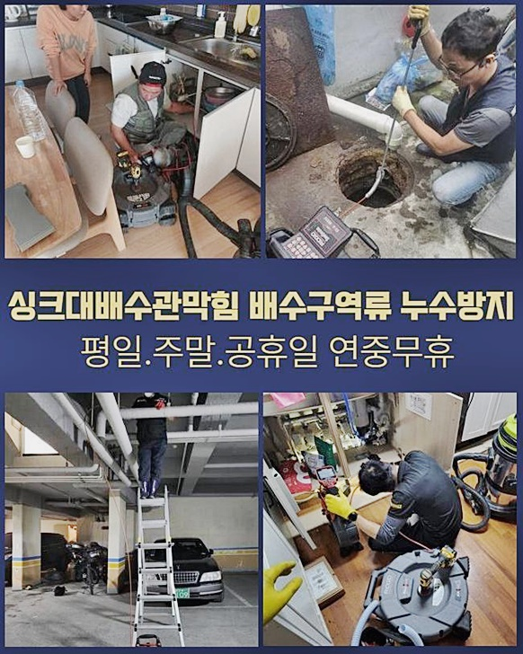
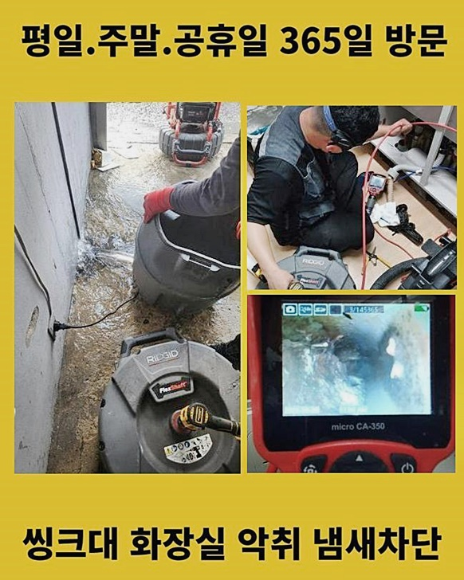
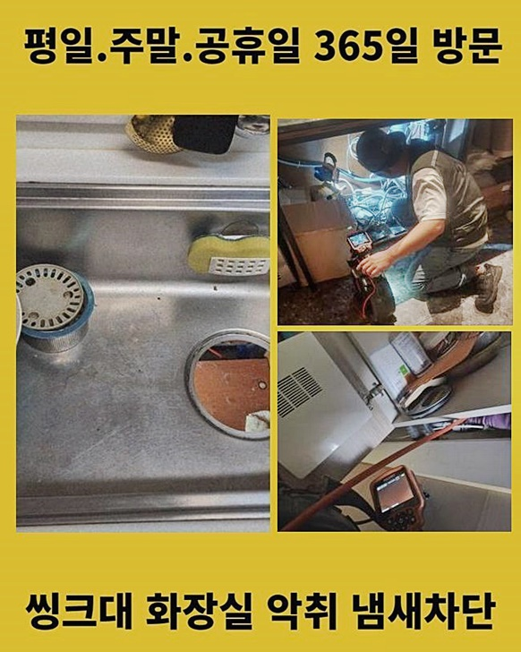
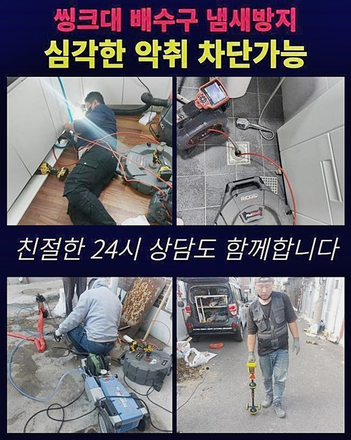
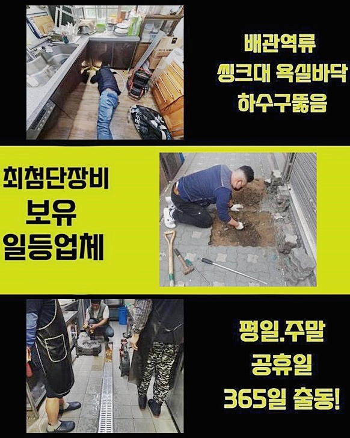
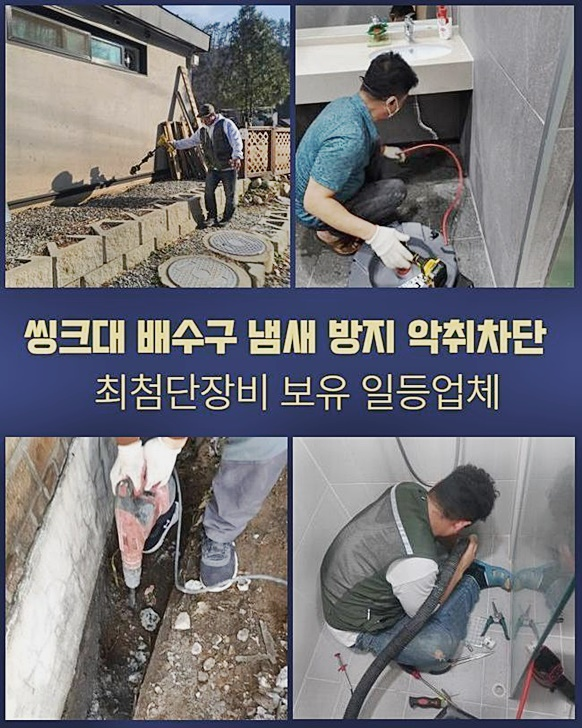
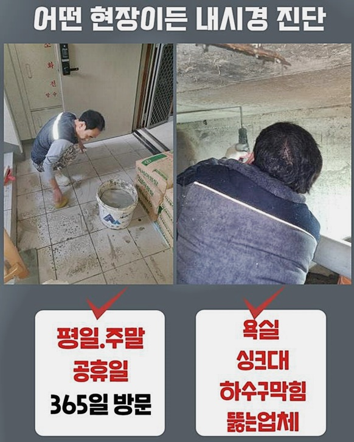

🏠 일산 주엽동싱크대배수관역류 가좌동 횡주관청소 설비
용인 싱크대막힘 전문 시공 후기

📋 작업 개요
- 위치: 용인
- 서비스 유형: 싱크대막힘, 변기막힘, 하수구막힘, 배관막힘, 역류해결, 뚫는업체, 배관청소, 고압세척
- 작업 일시: 2024. 7. 17. 9:51
- 업체명: 하수구수사대 (010-5615-2118)
🔍 문제 상황
일산 주엽동싱크대배수관역류 가좌동 횡주관청소 설비
불특정 다수가 쓰는 건축물에서 막히는 양상이 발생되었다고 말씀해주셔서 방문을 드리게되었어요
도착하니 역류증상이 발생되고 바닥부에는 하수들로 악취도 난다고 고충을 토로하셨죠
별다른 조책없이 방임한다면 문제들은 걷잡을 수 없이 커지므로 신속히 해결을 위해 방문을 드리게되었어요
저희의 경우 완성도 높은 시공을 진행하여 여러분을 돕는데요
미해결 시 수리비도 받고있지 않고 있으므로 여러 고객분들이 성공률이 뛰어난 저희께 의뢰를 맡기세요
처음엔 내시경장치로 군데군데 살펴야합니다 협소한 배관을 관찰할땐 내시경이 있어야합니다
내시경장치의 헤드쪽엔 렌즈들이 있어서 진단을 할때 군데군데 오차없이 확인케하죠
내시경으로 관찰하니 화면상의 붉은 형태로 되어버린걸 알 수 있었는데 붉어진 잔해가 기름때문이라 생각하시면 되겠는데요
다시말해 통수공간이 전혀 없는 상황입니다
이러한 문제는 연결된 관로에서 나가는 잔해가 중앙으로 모이게되면서 찌꺼기까지 침전되는 까닭에 오랫동안에 걸쳐 쌓여버리게 되면 문제들은 반드시 생겨나기 마련입니다
이렇다보니 다양한 측면에서 피해가 야기될수밖에 없죠
다양한 사람들이 거쳐가는 곳일때라면 관리자가 신경을 쓰고 위생적으로 이용되어야 막히지않고 지속적으로 쓰실 수 있으시답니다

🔎 원인 분석
💡 전문가 진단: 정밀 진단 장비를 사용하여 슬러지의 고착 여부를 판명하고 타격/세척 작업을 실시했습니다.
식용유 등을 버리시거나 음식물 잔해나 여타 물건들을 배출시키는 등 막혀버리는 문제를 야기하는 이물들을 투입시키지않고서 조심해주시면 위같은 불상사가 발발하지 않겠습니다
배관의 컨디션은 최악에 가까웠고 슬러지들이 상당량 축적되었던 상태였는데요
시발점을 짚어내기위하여 트랩부품까지 빼서 구석구석 파악해가며 심층부도 파악해봅니다
원인조사를 확실하게 못한다면 추후의 세척도 의미없다 보아야하죠 눈여겨봐야할 것은 해결이겠으나 동일한 문제들이 발생되지 않도록 하는게 중요해요
일시적인 해결을 한 뒤 철수하는게 아닌 지속적으로 쓰시면서 문제들이 발생되지않아야 의뢰인분들의 만족이 올라가죠
고객님 댁은 관리책 실시가 빈틈없이 진행되지 않았던 것으로 보여졌고 비위생적으로 관리된걸 파악할 수 있었습니다
막혀버리는 트러블이 빈번하거나 심각성이 두드러진다면 관리책실시를 원만하게 진행하지않은 경우들이 대부분입니다
불특정 인원들이 쓰기에 주기적인 청소를 간헐적으로라도 관찰했어야 됐지만 그런 흔적은 보이지 않았어요
우리집의 하수구들이 막히게되었을 때 대부분 특정부위의 장애라고 생각하는데 사실 메인관로에 증세가 생기면 연결된 가구들에 피해들을 전가시켜요
이런 상황에서는 시공관련 비용까지 올라가고 시간까지 늘어나는 바람에 의뢰자의 스트레스들이 쌓이게됩니다
저희전문가들에게 호소를 하셨어요
보통 남은 음식쓰레기를 변기통으로 배출시키는 경우들도 많이 보이고 기름들도 개수대에 버리는데요
기름의 경우 개수대에 버리면 추후에 증상이 생겨나게되고 휴지 등을 이용하여 걷어내고 설거지를 해주시기 바라요

🔧 작업 과정
저희들은 해당 사안처럼 한번 수리를 해드리고 끝내는것이 아닌 1년이라는 기간의 무상수리를 수행하므로 고객께서 불안한 기색없이 이용가능하다고 만족의 말씀도 많이 주십니다
저희전문진은, 해결하는것이 중요하겠으나 그 절차들이 중요한것이라 여기므로 전문성을 갖춘 장치를 운용하죠
그것들로는 내시경기기를 선두로 해 석션장치와 샤프트장치에요 배수관을 세척할 때에 요구됩니다
샤프트기는 끝부분이 사슬로 자리하고 있어서 딱딱한 잔해를 제거시키는데 최적화된 장비죠
딱딱한 것들과 흡착되어버린 슬러지들도 없애줍니다
뒤이어 석션의 경우 흡입시켜 부유하는 이물을 세척시킵니다
당연히 흡입해 뚫어주는게 목적이라 효과들도 좋습니다 가정에서 사용하고있는 청소기들과 동일한 원리로 작용한다고 보시면 되는데요
오차없이 청소해주려면 작업의 과정들이 중요해요 막힘의 까닭을 말끔하게 없애주고 재발될 수 없도록 조치해야해요
장기간에 걸쳐 내구성이 떨어진게 목격됐고 세척하기에도 어려웠어요
해당 문제들은 뚫는것에만 초점을 맞추지않고 높은 수압으로 청소도 철저하게 이행되야 새것과같이 추후에 문제도 생겨나지 않는답니다
고압노즐분사기의 경우 노즐부품을 부착시켜서 배수관으로 투입해 세척과정을 이행합니다
물때문에만 깔끔해진 배수관을 형성하기에 위험없이 운용되어지는 기기에요
이런저런 이물들을 세척을 실시하는 기능을 해요
청결을 담당하는 기능까지 수행하므로 만족도들은 높아집니다
전문가마다 해결책을 각자 다른건 당연할 수 있겠으나 이 시점에서 작업을 하고서 동일한 문제들이 되느냐 안 되느냐의 사항이겠죠
저희의 경우 지속적으로 해결책들을 배양시켰고 저희의 경우 서둘러 방문드려 조속히 수습가능합니다
지역적 한계없이 1시간안팎으로 방문드리는 것이 이뤄지고 있기에 문의를 주시는 의뢰자들이 상당수 빈번하게 목격되요
문제가 목격되면 여러분들이라면 당황하게되고 조속히 타파해야겠다는 생각을 하게 되기마련입니다
저희해결사가 수리를 해내고 그저 나몰라라하지 않고 일년이내 무상보증도 수행해드리니 안심하고 계셔도 좋아요
가구원들이 주의사항등을 신경써서 생활하면 문제 발생은 나타나지 않을 수 있어요
일부 세대만의 문제가 아니므로 다수가 협심해 관리를 해주어야 됩니다


✅ 작업 완료
특정 부위가 어떠한 결함이 생기면 금일의 장소처럼 전반적으로 증세가 됩니다
그래서 그 전조가 발생되면 전문적인 접근이 필수에요
무작정 해결을 위해 약품들만 사용하는 고객님이 자주 보입니다
클리너가 무용지물인 것은 아니겠으나 쓰시고나서 효과들이 미미하면 심부에까지 문제가 있는 경우가 많아 조속히 전문가를 통해 시정해야하죠
최종적으로 내시경장비로 이상이 없는지 보고 제대로 통수오류가 해결되면 마무리를 지어요
미해결된 현장이라면 금액을 청구하지 않고있으니 편히 도움을 청해보세요!




⚠️ 주방 싱크대 배관 막힘 예방 수칙
- ✅ 기름기가 묻은 식기나 프라이팬은 설거지 전 키친타올로 반드시 기름때를 닦아내세요.
- ✅ 주기적으로 싱크대 개수대에 뜨거운 물을 가득 받아 한 번에 내려 배관 내부 기름을 씻어내세요.
- ✅ 배수구 거름망을 미세한 필터로 사용하시고 음식물 찌꺼기가 틈으로 새어 들지 않게 관리하세요.
- ✅ 베이킹소다와 식초를 뜨거운 물과 함께 일주일에 한 번씩 부어주면 배관 살균과 막힘 예방에 좋습니다.
💡 핵심 정리
- 확실한 장비 작업(내시경 점검 및 샤프트 스케일링)으로 원인을 뿌리 뽑습니다.
- 작업 후 1년 이내에 동일한 부위 재발 시 100% 무상 A/S 서비스를 보장합니다.
- 서울 · 경기 · 인천 전 지역에 24시간 언제든 긴급 출동할 수 있도록 항시 대기 중입니다.
❓ 자주 묻는 질문 (FAQ)
🚨 용인 싱크대막힘 문제로 고민이신가요?
정확한 원인 진단과 확실한 시공으로 재발 없는 해결을 약속드립니다.
24시간 긴급 출동 | 서울 · 경기 · 인천 전지역 | 1년 내 재발 시 무상 A/S